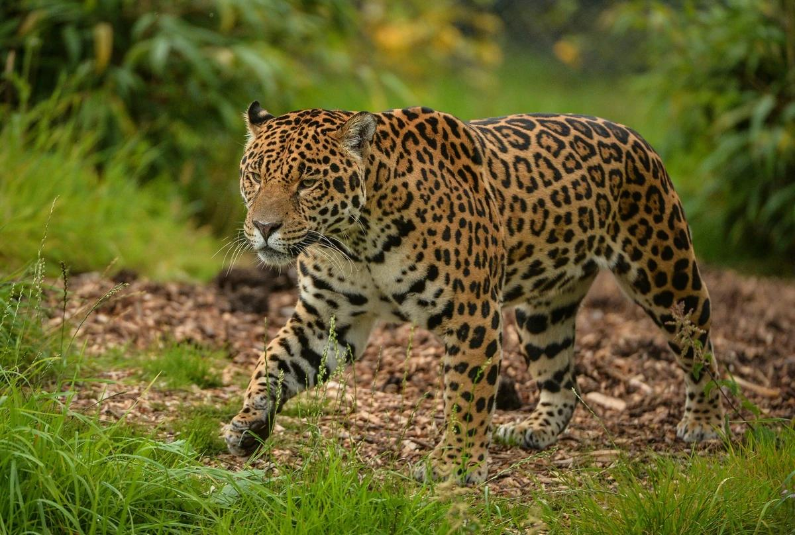

Los jaguares poseen un color de ojos amarillento y unas orejas muy pequeñas y redondeadas. Estos animales son excelentes nadadores, por lo que siempre buscan instalarse en zonas cercanas al agua. Su peso es muy variado, por lo que podemos encontrar ejemplares desde 56 kg hasta 96 kg y, en casos menos comunes, incluso existen registros de machos que han llegado a pesar 160 kg. Su larga cola puede llegar a medir de 45cm a 75 cm.
Existe una variación de jaguar de color negro, pero que sigue conservando las manchas características. Coloquialmente se le conoce como pantera negra y su color es producido por un exceso de melanina en su cuerpo que lo hace más oscuro. También se conocen ejemplares con falta de pigmentación conocidos como Panteras blancas.
Esta especie habitaba desde Estados Unidos hasta el norte de Argentina, no obstante, a causa del exterminio de su especie por culpa del hombre, hoy en día solo forma parte de las selvas tropicales de América Central y del Sur.
La distribución más grande de este felino se encuentra en la cuenca del Amazonas y en el norte y este de las costas caribeñas de Venezuela y Guayana.
Estos carnívoros tienen en su dieta más de 85 especies para alimentarse y su forma de caza es completamente letal. Puede escalar, arrastrarse y nadar, por lo que difícilmente una presa se le escapa. A su vez, sus dientes son tan potentes, que lo posiciona en el primer lugar de todos los felinos en tener la mordida más fuerte (empatado con la pantera nebulosa), incluso antes del tigre y león y como el segundo de todos los mamíferos del mundo, después de la hiena manchada, que se alimenta de carroña.
Para poner un ejemplo de su fuerza, una vez que el jaguar se abalanza contra su presa, este se va directamente al cuello para causarle asfixia, o bien incrusta sus poderosos colmillos en la parte posterior del cráneo, atravesando el hueso y llegando hasta el cerebro.
Los jaguares son capaces de atravesar pieles gruesas y rugosas de reptiles y perforar sin problema caparazones de tortugas. De igual manera, puede arrastrar hasta ocho metros animales muy pesados y convertir sus huesos en polvo. Con esas habilidades y técnicas de ataque únicas puede cazar animales salvajes de hasta 300 kg.
